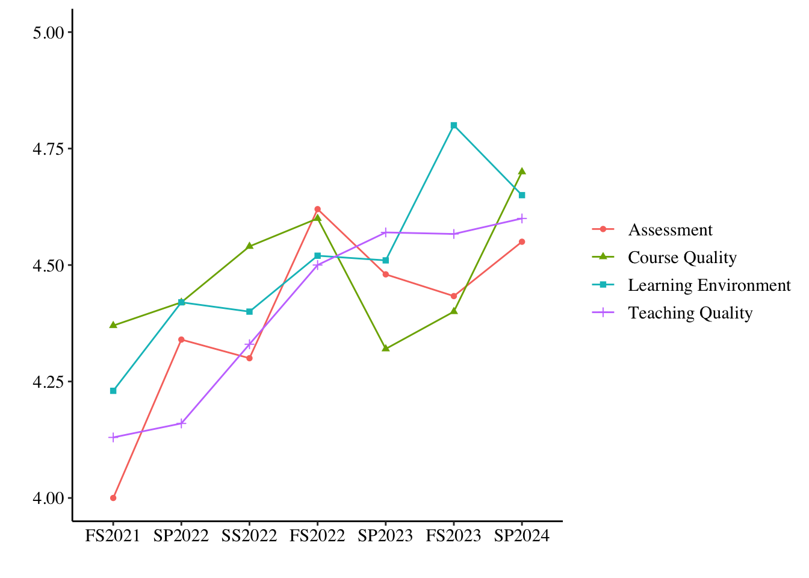

Teaching Philosophy
My teaching philosophy incorporates principles that promote effective
conceptual learning as well as teaching transferable skills. The three
principles my teaching philosophy centers around are (1) high
expectations in the classroom; (2) a focus on teaching transferable
skills; and (3) the importance of student-teacher relationships.
Included below are my average teacher course evaluation (TCE) scores
by semester on four core competencies: assessment, course quality,
learning environment, and teaching quality. The y-axis ranges from
Strongly disagree (1) to Strongly agree (5).

For more information, you can download my most recent course
evaluations for each of the courses I have taught below, or click here for a comprehensive pdf of all my past
course evaluations.
Courses
Comparative Politics
Intro to Comparative Politics
-
Course Description: A general introduction to the domestic
politics of countries in the various regions of the world, with an
emphasis on the concepts used to understand why political issues and
processes differ across developed and developing nations. Students also
learn how domestic politics are shaped by super-national institutions
and by national integration into a global economy.
-
Syllabus | TCE
Comparative Political Behavior
-
Course Description: The course introduces students to the
subfield of comparative political behavior. The seminar discussions will
explore research questions relating to cross-national differences and
similarities in public opinion formation, political culture and values,
voting behavior, and other forms of political participation. We will
also address violent forms of political participation, including
strikes, protests, and revolutions. While the focus of the class will be
on comparing and contrasting the US, Britain, France and Germany, we
will also address political behavior in both developed and developing
democracies.
-
Syllabus | TCE
UK Politics
-
Course Description: This course will introduce you to British
politics. This course will cover a range of topics central to the
structure and substance of politics in the United Kingdom: the social
and political context, the basic institutions of government, public
opinion and participation, interest groups, and public policy. To
facilitate learning about these topics as they relate to the UK, we will
examine what the UK shares and what differentiates it from other
countries such as the U.S. and other European states. This course has
three fundamental goals: (1) to introduce students to the major
questions in British politics, (2) to acquaint them with the field’s
best answers to those questions, and (3) to give them the tools to think
critically about the answers.
-
Syllabus | TCE
American Politics
Intro to American Politics
-
Course Description: This course is an introduction to American
government and to various aspects of political science. We will discuss
a broad survey of themes, questions, and topics related to issues
central to the structure and substance of politics in the United States.
We will cover: the founding and the Constitution, federalism, civil
rights, the basic institutions of government, public opinion and
participation, interest groups, and public policy.
-
Syllabus | TCE
Campaigns and Elections
-
Course Description: An analysis of individual voting behavior and
candidate strategies during presidential and congressional elections.
The effect of the mass media, political action committees, and political
advertising on the vote decision is examined. Attention is also devoted
to candidates campaign organizations and communication strategies.
-
Syllabus | TCE
Methods
The Science of Politics
-
Course Description: This course provides an introduction to the
Science of Politics. We will consider a variety of research methods,
including historical case study research, field research, quantitative
analysis, survey research, experimental techniques, and more. The
central objective of this course is to provide students with a clear
understanding of how to evaluate causal relationships in the political
world using real world applications.
-
Syllabus | TCE
Social Science Statistics
-
Course Description: This course provides an introduction to a
variety of statistical methods used in quantitative data analysis
particularly in the social sciences. These statistical methods are used
in quantitative data analysis, levels of measurement, frequency
distribution, graphic representations, measures of average and
dispersion, cross-tabulations and measures of association, probability
and hypothesis testing, bivariate analyses, statistical inference using
single and multiple samples and analysis of variance. General topics
include research methodologies and statistical tests, including measures
of central tendency and variability, Z-scores, Hypothesis testing,
T-tests, ANOVA, Chi-square, correlation, Bivariate regression and
Confidence intervals.
Social Science Statistics